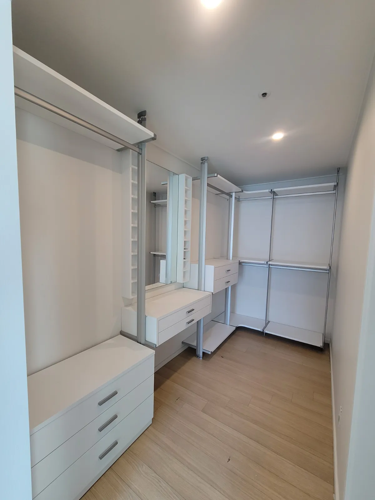

Brand · Hanssem
한샘 시스템행거
이전설치
같은 브랜드 제품이라도 설치 시기와 구성에 따라 구조가 다릅니다.
한샘 드레스룸은 폴로 천장과 바닥을 지지하는 형태, 벽에 고정하는 형태, 서랍장·화장대가 결합된 형태 등 집마다 설치된 모습이 다릅니다. 그래서 모델명을 몰라도 괜찮습니다. 지금 설치된 모습을 사진으로 보내주시면 구조를 먼저 확인하고 해체 방법과 새 공간 배치를 안내해 드립니다.
코니처는 한샘 공식 서비스센터가 아닌 가구 이전설치 전문 업체로, 기존 부품을 활용해 새 공간에 맞게 다시 설치합니다. 다시 쓰기 어려운 부품이 있는지도 설치 전에 미리 확인해 드립니다.

Situations
이런 경우 문의가 많습니다
모델명을 모를 때
설명서나 모델명이 없어도 설치 사진으로 구조를 확인할 수 있습니다.
화장대·거울이 붙어 있을 때
결합된 부속까지 함께 해체해 새 배치에 맞춰 다시 붙입니다.
한쪽이 느슨한 채로 옮길 때
느슨하거나 빠진 부분을 확인해 재설치 때 함께 바로잡습니다.
일부 칸만 옮기고 싶을 때
필요한 칸만 새 공간에 설치하고 나머지는 정리해 드립니다.
Checklist
사진 보낼 때 함께 알려주세요
| 보낼 것 | 찍는 방법 | 필요한 이유 |
|---|---|---|
| 정면 사진 | 행거 전체가 나오게 한 장 | 칸 수와 구성을 파악합니다 |
| 폴 윗부분 | 천장에 닿는 부분을 가까이 | 고정 방식을 확인합니다 |
| 부속 | 서랍장·화장대·거울 | 해체 순서와 시간을 정합니다 |
| 새 공간 치수 | 벽 폭, 천장 높이 | 그대로 설치 가능한지 판단합니다 |
| 일정 | 해체일과 설치일 | 방문 일정을 맞춥니다 |
Process
한샘 드레스룸 이전 순서
사진 확인
설치 사진으로 구조와 부속을 확인합니다.
새 배치 정하기
새 공간 치수에 맞춰 칸 배치를 정합니다.
해체
부속을 먼저 분리하고 폴과 선반을 순서대로 해체합니다.
재설치
정한 배치대로 세우고 부속을 다시 결합합니다.
점검
수평과 흔들림, 서랍 여닫힘을 확인합니다.
FAQ
자주 묻는 질문
제조사 서비스로 신청해야 하지 않나요?
제조사 서비스와 별개로 이전설치만 따로 맡길 수 있습니다. 코니처는 한샘 공식 서비스센터가 아니며, 이전설치 작업을 하는 업체입니다.
오래된 제품도 옮길 수 있나요?
부품 상태에 따라 다릅니다. 폴과 브래킷에 변형이 없는지 사진으로 먼저 확인하고, 다시 쓰기 어려운 부품이 있으면 미리 알려드립니다.
화장대나 거울도 같이 옮겨지나요?
행거에 결합된 부속은 함께 해체하고 새 배치에 맞춰 다시 설치합니다.
같은 배치로 설치해야 하나요?
아닙니다. 새 공간에 맞춰 칸 순서나 형태를 바꿔 설치할 수 있습니다.
비용은 얼마인가요?
칸 수와 부속, 층수, 이동 거리에 따라 달라집니다. 사진과 치수를 보고 안내해 드립니다.